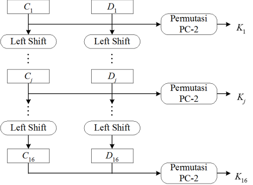
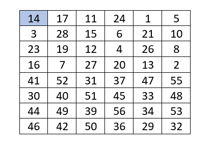
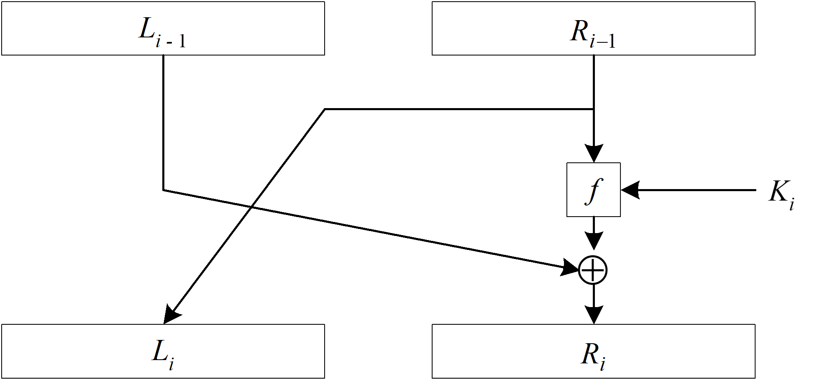
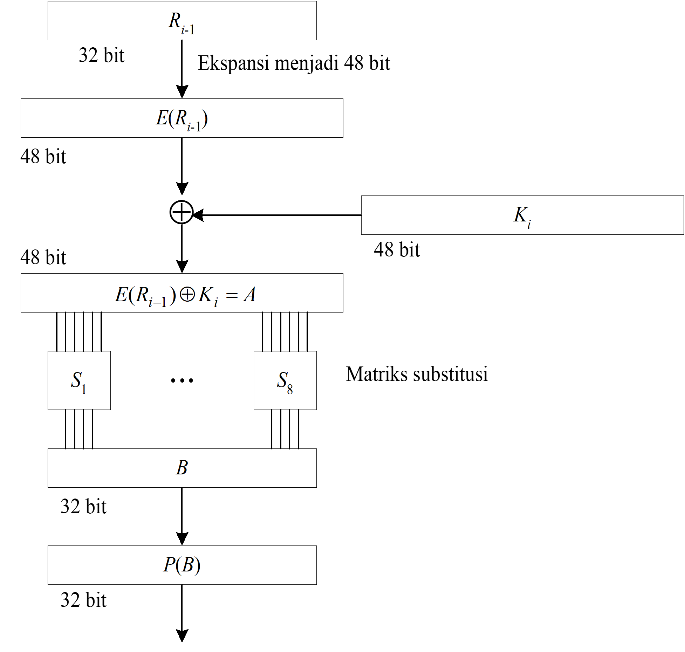
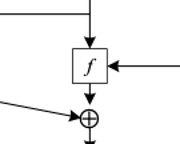
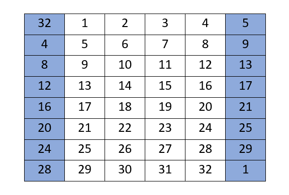
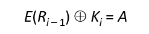
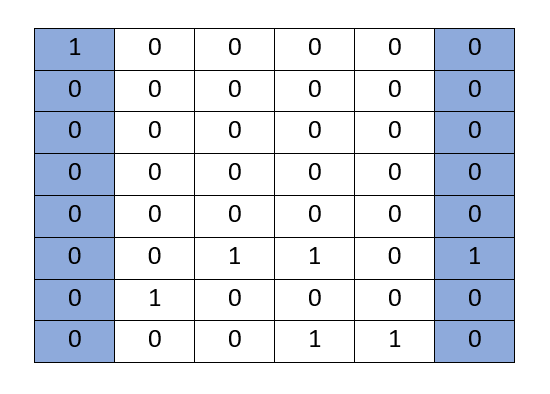
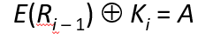
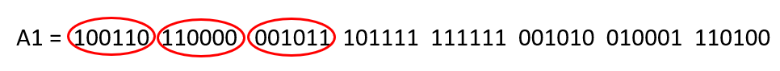

2. DES
DES (Data Encryption Standard) merupakan salah satu algoritma enkripsi yang termasuk ke dalam kriptografi kunci-simetri dan tergolong jenis cipher blok. Panjang kunci ekternal 64 bit (sesuai ukuran blok), tetapi hanya 56 bit yang dipakai (8 bit paritas tidak digunakan)
Skema Global DES
- Setiap blok (plainteks atau cipherteks) dienkripsi dalam 16 putaran
- Setiap putaran menggunakan kunci internal berbeda
- Kunci internal (56-bit) dibangkitkan dari kunci eksternal
- Setiap blok mengalami permutasi awal (IP), 16 putaran enciphering, dan inversi permutasi awal (IP-1)

Keterangan :
- Blok plainteks dipermutasi dengan matriks permutasi awal (initial permutation atau IP)
- Hasil permutasi awal kemudian di-enciphering- sebanyak 16 kali (16 putaran). Setiap putaran menggunakan kunci internal yang berbeda
- Hasil enciphering kemudian dipermutasi dengan matriks permutasi balikan (invers initial permutation atau IP-1 ) menjadi blok cipherteks

Skema Membangkitkan Kunci External

Contoh Soal
Plaintext = COMPUTER Kunci (dalam Hex) = 13 34 57 79 9B BC DF F1 (64 Bit)
- Ubah plaintext menjadi Biner
C, ascii = 67, binary = 01000011
O, ascii = 79, binary = 01001111
M, ascii = 77, binary = 01001101
P, ascii = 80, binary = 01010000
U, ascii = 85, binary = 01010101
T, ascii = 84, binary = 01010100
E, ascii = 69, binary = 01000101
R, ascii = 82, binary = 01010010
Total ada 64 bit plaintexPermutasi Awal
Tujuan : mengacak plainteks sehingga urutan bit-bit di dalamnya berubah


- Encoding setiap 64 bit data pada Plaintext dengan IP (Initial Permutation)

- P = 01000011 01001111 01001101 01010000 01010101 01010100 01000101 01010010- Hasil akhir permutasi awal :
IP = 11111111 10111000 01110110 01010111 00000000 00000000 00000110 10000011- Memecah Hasil IP


- Jadi hasilnya :
L0 = 11111111 10111000 01110110 01010111R0 = 00000000 00000000 00000110 10000011- Pembangkitan Kunci
- Kunci = 13 34 57 79 9B BC DF F1
- Ubah K ke dalam fungsi Hexadecimal:
K = 00010011 00110100 01010111 01111001 10011011 10111100 11011111 11110001 - Permutasikan menggunakan Tabel PC-1


- Permutasi PC-1

K = 00010011 00110100 01010111 01111001 10011011 10111100 11011111 11110001- K+= 1111000 0110011 0010101 0101111 0101010 1011001 1001111 0001111- Pecah menjadi C0 dan D0

Selanjutnya nilai K+ dibagi menjadi 2 bagian kanan dan kiri,C0 dan D0 yang setiap bagian 28 bit panjangnya

Hasilnya mendapatkan :
C0 = 1111000 0110011 0010101 0101111 D0 = 0101010 1011001 1001111 0001111 - Membuat Block Cn dan Dn

- Setelah mendapatkan C0 dan D0, sekarang kita membuat 6 blok Cn dan Dn yang setiap blok berasal dari Cn-1 dan Dn-1
- Selanjutnya, kedua bagian digeser ke kiri (left shift) sepanjang satu atau dua bit bergantung pada tiap putaran
- Operasi pergeseran bersifat wrapping atau round-shift

- Hasil C0 dan D0
- Dari C0 dan D0 awal kita mendapatkan :
C0 = 1111000011001100101010101111 D0 = 0101010101100110011110001111 - Untuk putaran 1, maka kita geser C0 dan D0 ke kiri sebanyak 1 kali
C1 = 1110000110011001010101011111D1 = 1010101011001100111100011110- Untuk putaran 2, mencari C1 dan D1 geser 1 kali. Selalu perhatikan tabel wrapping di slide sebelumnya dikarenakan untuk putaran 3 – 8 bergeser 2 kali. Dan lakukan seterusnya sampai C16 dan D16
C16 = 111100001100110010101010111D16 = 010101010110011001111000111- Permutasi PC-2

- Gunakan permutasi PC-2

- Untuk C1D1 kita mendapatkan
C1D1 = 11100001 10011001 01010101 11111010 10101100 11001111 00011110- Dipermutasi menjadi
K1 = 000110 110000 001011 101111 111111 000111 000001 110010Key Hasil PC-2
K1 = 000110 110000 001011 101111 111111 000111 000001 110010K2 = 011110 011010 111011 011001 110110 111100 100111 100101K3 = 010101 011111 110010 001010 010000 101100 111110 011001 K4 = 011100 101010 110111 010110 110110 110011 010100 011101 K5 = 011111 001110 110000 000111 111010 110101 001110 101000 K6 = 011000 111010 010100 111110 010100 000111 101100 101111K7 = 111011 001000 010010 110111 111101 100001 100010 111100K8 = 111101 111000 101000 111010 110000 010011 101111 111011 K9 = 111000 001101 101111 101011 111011 011110 011110 000001K10 = 101100 011111 001101 000111 101110 100100 011001 001111 K11 = 001000 010101 111111 010011 110111 101101 001110 000110 K12 = 011101 010111 000111 110101 100101 000110 011111 101001 K13 = 100101 111100 010111 010001 111110 101011 101001 000001 K14 = 010111 110100 001110 110111 111100 101110 011100 111010 K15 = 101111 111001 000110 001101 001111 010011 111100 001010 K16 = 110010 110011 110110 001011 000011 100001 011111 110101Hasil Sementara
- Dari hasil proses sebelumnya sudah dilakukan proses permutasi awal terhadap plaintext yang mendapatkan nilai
L0 = 11111111 10111000 01110110 01010111R0 = 00000000 00000000 00000110 10000011- Berikutnya sudah didapatkan pula kunci sebanyak 16 buah untuk proses enchipering
Proses Enchiphering
Dalam proses enchipering, setiap blok plainteks mengalami 16 kali putaran, Setiap putaran enciphering merupakan jaringan Feistel :

Li = Ri – 1
Ri = Li – 1 f(Ri – 1, Ki)keterangan :
- Ri – 1, Dimulai dari L0 dan R0 yang sudah kita dapatkan
- K1, Sudah disiapkan 16 kunci dari proses sebelumnya
Berikut Langkah-Langkah Proses Enchiphering
- Fungsi f

keterangan :

Alur ini merupakan turunan dari fungsi f sebelumnya
- Tabel Ekspansi
- Berdasarkan diagram alur sebelumnya, proses selanjutnya adalah ekspansi pada blok Ri – 1 32-bit menjadi blok 48 bit
- Fungsi ekspansi direalisasikan dengan matriks permutasi ekspansi :

- Expansi R0
Hasil ekpansi, yaitu E(Ri – 1) di-XOR-kan dengan Ki menghasilkan vektor A 48-bit :

R0 = 00000000 00000000 00000110 10000011 
E(R0)= 100000 000000 000000 000000 000000 001101 010000 000110
- Fungsi XOR untuk hasil A1
Hasil ekpansi, yaitu E(Ri – 1) di-XOR-kan dengan Ki menghasilkan vektor A 48-bit :

E(R0)= 100000 000000 000000 000000 000000 001101 010000 000110 K1 = 000110 110000 001011 101111 111111 000111 000001 110010 -----------------------------------------------------------XOR A1 = 100110 110000 001011 101111 111111 001010 010001 110100
- Persiapan subtitusi S-Box
Vektor A dikelompokkan menjadi 8 kelompok, masing-masing 6 bit, dan menjadi masukan bagi proses substitusi
Ada 8 matriks substitusi, masing-masing dinyatakan dengan S-Box
S-Box menerima masukan 6 bit dan memberikan keluaran 4 bit
Subtitusikan dengan S1, S2, S3 dan seterusnya
